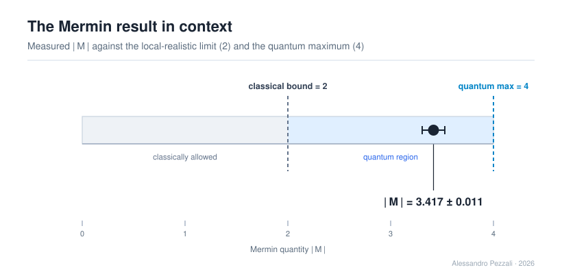
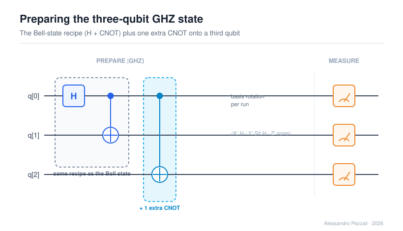
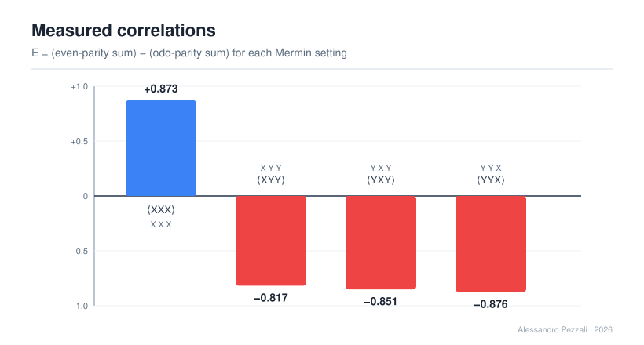
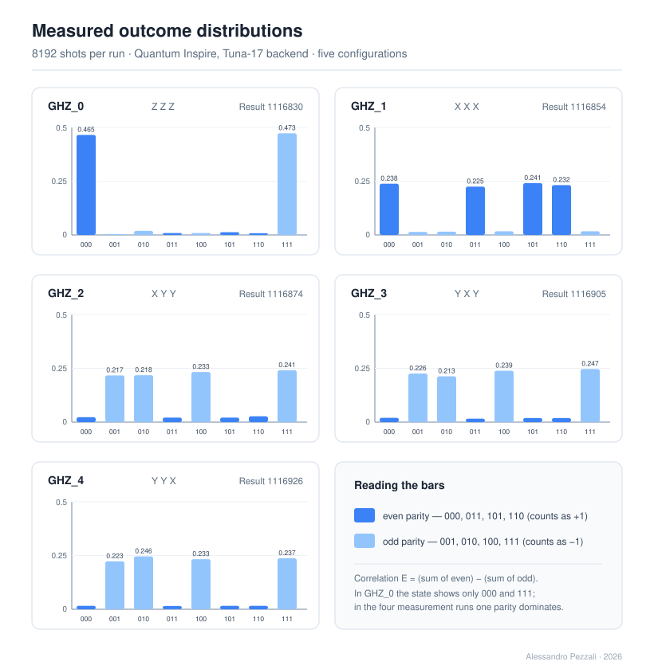

Che cosa dimostra questo esperimento
Nel 1989 Greenberger, Horne e Zeilinger mostrarono che tre particelle entangled espongono il conflitto tra meccanica quantistica e realismo locale in modo molto più netto di due. Il test di Bell a due qubit produce una disuguaglianza statistica — serve la media di molte run per vedere la violazione. L'argomento GHZ produce invece una contraddizione tutto-o-niente: per quattro configurazioni di misura, realismo locale e meccanica quantistica prevedono segni opposti della stessa quantità. Mermin condensò tutto in un solo numero M: qualsiasi teoria locale-realistica deve rispettare |M| ≤ 2, mentre la meccanica quantistica arriva fino a |M| = 4.
In questo esperimento il valore misurato è |M| = 3.417 ± 0.011: il limite classico è superato di circa 123 deviazioni standard — un margine 3.6 volte più ampio dei 34σ del test CHSH a due qubit sulla stessa macchina. Ed è esattamente questo il punto di aggiungere un terzo qubit: l'argomento concentra il conflitto nei segni delle correlazioni, così anche uno stato parzialmente degradato atterra lontanissimo dal limite classico.

Il risultato in contesto: la barra misurata cade in profondità dentro la regione quantistica, sopra il limite classico di 2 e sotto il massimo algebrico di 4.
Come è stato fatto
Ogni run parte dallo stesso stato GHZ |000⟩+|111⟩, preparato con tre sole porte in cQASM 3.0: la stessa coppia H + CNOT dello stato di Bell del Capitolo 1, più una CNOT in più che copia la correlazione su un terzo qubit. Cambiano solo le rotazioni di base finali: quattro run misurano le combinazioni di Mermin (XXX, XYY, YXY, YYX) e una quinta run di controllo misura in base Z per verificare lo stato preparato. Ogni configurazione è stata eseguita con 8192 shot sul backend Tuna-17, in un'unica sessione di cinque run consecutive.
La run di controllo risponde anche a una domanda più silenziosa: la seconda porta entangling distrugge lo stato? No. Lo stato preparato mostra solo 000 e 111 con peso complessivo 0.938 (fedeltà), e la forza media delle correlazioni è 0.854 — contro circa 0.91 dello stato di Bell a due qubit sullo stesso hardware. Il terzo qubit è costato pochissimo: un risultato silenzioso ma per nulla scontato su un processore reale.

Il circuito: H + CNOT — lo stesso blocco del Capitolo 1 — più una sola CNOT aggiuntiva. Quella porta è l'intera differenza tra due e tre qubit entangled.

Le quattro correlazioni misurate: +0.873, −0.817, −0.851, −0.876. Il pattern "tre-e-uno" nei segni è la firma che la combinazione di Mermin è costruita per rilevare.

Le distribuzioni misurate. Nella run di controllo (Z Z Z) dominano solo 000 e 111 — la firma dello stato GHZ. Nelle quattro run di misura domina una sola parità: è questo squilibrio a produrre correlazioni grandi e di segno definito.
La sorpresa onesta dei segni
Tutte e quattro le correlazioni sono arrivate con il segno opposto alla previsione "da manuale": il pattern è globalmente ribaltato. Non è un errore e non è rumore — è una convenzione fissa nel modo in cui la piattaforma implementa la misura in base Y (la rotazione S†·H e l'etichettatura del suo esito). Il ribaltamento è identico e coerente su tutte le run e sull'intera sessione: un guasto casuale non potrebbe mai essere così consistente. La struttura di Mermin resta intatta — sempre tre correlazioni di un segno e una dell'altro — e |M| non dipende in alcun modo dalla convenzione.
Ho scelto di documentare questo dettaglio apertamente invece di assorbire il segno meno in silenzio, perché è esattamente il genere di cosa che non compare in nessun libro di testo: emerge solo quando esegui il circuito su hardware vero e leggi i numeri che la macchina restituisce davvero.
Trasparenza e riproducibilità
Il quaderno riporta i job ID, i result ID, i timestamp e gli hash dei cinque programmi eseguiti, le probabilità grezze restituite dalla piattaforma, l'analisi completa delle incertezze e il codice sorgente cQASM 3.0 integrale in appendice, insieme agli screenshot originali della piattaforma per tutte e cinque le run. Nessuna pretesa oltre ciò che i dati sostengono: cinque run, una sessione, una violazione enorme — documentata in modo che chiunque possa riprodurla.
Autore unico: Alessandro Pezzali. Progetto di ricerca personale indipendente, a scopo educativo e documentale. © 2026 Alessandro Pezzali.
Quantum Laboratory Notebook — GHZ / Mermin on Tuna-17
PDF di 18 pagine in inglese · 4 figure vettoriali · screenshot originali delle cinque run · dati grezzi, analisi e codice sorgente completo · 1.9 MB